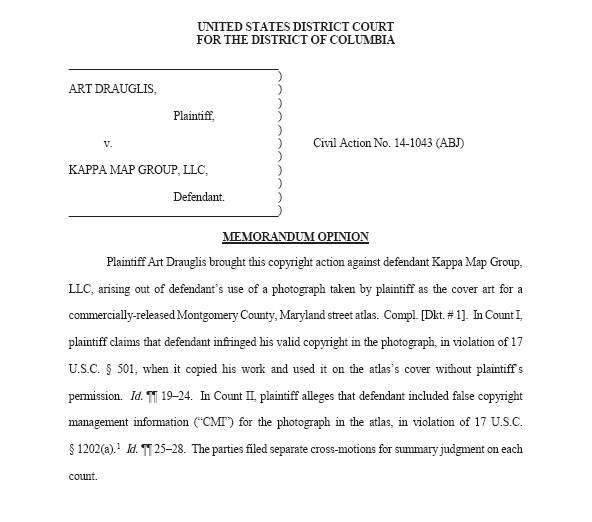

2016-03-03

在創用CC 授權條款的四大元素裡，相同方式分享 (share-alike) 可說是較不容易被理解，而可能引發誤會的一個義務性規定。有的朋友直接望文生義，認為相同方式分享指的是作品在釋出時本來公諸於紙本，那後續分享的方式就必須限定紙本，或者本來透過網路散布，則之後再傳遞時也必須透過網際網路供人下載。其實，前述的說法並不是正確的！「相同方式分享」加諸兩個字變成「相同『授權』方式分享」才是它的真意，較白話一點來說，「相同授權方式分享」告訴使用者：「你可以使用他人以 CC BY-SA、CC BY-NC-SA 等授權方式提供的作品，但若取之作為後續創作的基礎，形成一個新的衍生著作（註一），則之後該衍生著作在提供使用時，也必須採用 CC BY-SA、CC BY-NC-SA 等原作品相同的授權方式，來進行分享。」
所以說，「相同方式分享」要求該素材的使用者：「你是用什麼條件得到原素材的授權，在你依原素材新創作品之後，該新創作品也必須依完全一樣的授權條件，來進行後續的分享。」這樣的概念經闡釋後，多數的朋友都能進一步理解，但實務應用上的困難處在於：什麼狀態叫作依原素材新創作品？單純把不同的素材放在一起展示，算是新創作品嗎？在一個簡報檔案穿插 CC BY-SA 授權的圖片，算是新創作品嗎？漸漸的，我們發現，既然創用CC 相同方式分享元素，會在新創作品時發揮其拘束力，那麼究竟什麼狀態會被認為新創了一個衍生作品，就是相同方式分享元素在實踐上，最容易引發爭議和討論的地方。
【美國哥倫比亞地方法院一審判決認為將 Flickr 上 CC BY-SA 2.0 授權圖片單純編輯至雜誌並不違反其條款要求】
Drauglis v. Kappa Map Group, LLC. 這個 2015 年訴訟案的相關司法文書可見本文附加檔，其宣判綱要大致如下：
- 原創作 Drauglis 在 Flickr上 以 CC BY-SA 2.0 釋出照片，該照片被取用於商業販售雜誌上，美國哥倫比亞地方法院判決只要商業雜誌善盡姓名標示義務即為合法。
- 該照片的拍攝者 Drauglis 主張創用CC 相同方式分享元素的擴散效力應及於整體雜誌，故認為出版雜誌的 Kappa Map Group 公司，應將整本雜誌都改以 CC BY-SA 2.0 來進行販售才是，此一主張不為承審法官同意，承審法官指出創用CC 相同方式分享的拘束效力，僅應在產生衍生著作時啟動，然而此案中該雜誌為圖表編輯物，故雜誌裡其他圖、表與被選用的 Drauglis 拍攝照片，實為編輯性的關係 (compilation) 而非衍生關係，故認為 Drauglis 拍攝照片要求的相同方式分享義務，不及於其他被編輯圖片。（註二）
基本上過往全球 CC 總部的法律見解，與此案承審法官亦並無太大的衝突與差異，故「相同方式分享拘束效力僅及於衍生著作 (The ShareAlike requirement applies only to derivative works)」的看法，未來在美國一地似乎就會變成法院認證的見解了。然而，此案較是傳統著作權領域的分析與應用，所以評判起來較為容易，創用CC 相同方式分享的機制，若回歸到軟體程式領域，該名詞被稱為著佐權（Copyleft，註三），而又因為軟體程式撰寫過程中，不同元件獨立撰寫但嗣後進行連結互動的比例頻繁，什麼時候是元件彼此獨立而僅是功能性的連結互動，什麼時候是兩元件之間有先後的參照衍生關係，這份際與實踐應如何拿捏，也就更為複雜而耐人尋味。近來在自由開源軟體授權領域的兩個指標性的訴訟與爭議案件，恰可讓我們窺探此事的輪廓。
【Linux Kernel 貢獻者 Christoph Hellwig 於德國法院控告 VMware 涉及 GPL 授權程式使用侵權】
進一步相關資訊，可參照 Software Freedom Conservany (SFC) 對此訴訟進行的說明專頁（註四）。此案件相關的最新發展，則可參照開源軟體領域資深貢獻者 Harald Welte 於 2016 年 2 月 25 日所作的法庭聽證 (court hearing) 報導（註五）。依照 Welte 報導所作的節錄重點有：
- VMware 公司使用了部份 GPL-2.0 授權的 Linux Kernel 程式碼在其 ESXi 系列產品裡，而 GPL-2.0 是嚴謹的 Copyleft 授權模式，要求使用其該授權程式碼的衍生著作，其後必須依照同樣的 GPL-2.0 授權條款來提供利用。
- VMware 公司將取自 Linux Kernel 的程式碼，編撰成名為 vmlinux 的程式模組，並讓自家撰寫並未提供程式源碼的封閉私有系統 vmkernel，透過執行時動態連結 (dynamically linked together at run-time) 來與 vmlinux 互動，而在執行時，開源的 vmlinux 與封閉的 vmkernel，會在同樣的執行框架下互動，包括實際使用的記憶體區塊、序列，以及操作流程等。
- Christoph Hellwig 在德國法院向 VMware 公司提出訴訟的爭點在於，Hellwig 認為 GPL-2.0 的授權拘束範圍不單單及於開源的 vmlinux，也應該及於一部份與 vmlinux 互動頻繁的 vmkernel，並質疑 VMware 單就目前 vmlinux 部份提供源碼 (Source Code) 的作法是不公正且違反 GPL-2.0 授權條款的，因為 vmlinux 裡面許多的功能必須透過與 vmkernel 高度連結互動才能執行，此些部份應該都為 Linux Kernel 的衍生作品，而不能接受 VMware 公司將不欲提供源碼的部份安置於封閉的 vmkernel 層級下。
- 德國法庭聽證進行後的爭點有二，一是 Christoph Hellwig 固然為 Linux Kernel 專案程式碼持續的貢獻者，然而 VMware 公司是否真的取用了屬於 Hellwig 所撰寫的程式碼至其 vmlinux 程式模組下，而這些真正被取用的程式碼，足不足以讓 Hellwig 能以著作權利人的身份，獨立向 VMware 公司提出侵權訴訟？
- 究竟從程式互動的依賴性看，開源的 vmlinux 與封閉的 vmkernel 是一個作品的兩個部份，亦或是二個獨立運作僅為彼此功能與介面互動的作品？
質言之，德國法院的承審法官，很清楚審判的關鍵點在於原程式碼 Copyleft 效力所及範疇的認定，也有高度意識到此案判決，將對全球自由開源軟體授權應用發展產生重大影響。
【SFC 公開勸諫 Canonical 不要在即將發布的 Ubuntu Linux 16.04 內置 ZFS 格式支援造成侵權爭議】
無獨有偶的，軟體自由託管機構 (Software Freedom Conservany, SFC) 亦於 2016 年 2 月 25 日具文公開線上發表，其對 Canonical 將於下一版本 Ubuntu 16.04 內置 ZFS 格式支援到 Linux Kernel 的批評立場（註六）。此公布重點如下：
- ZFS 本為昇陽公司 (Sun) 的開源專案，採用 CDDL-1.0 授權散布，故後續社群開發者延續專案成為 Open ZFS，也必須延用 Copyleft 特性的 CDDL-1.0 來提供衍生的成果。
- 日前英商 Canonical 已具文公告，將於下一版本 Ubuntu 16.04，內置 zfs.ko 檔案，成為目的碼格式的 kernel module，讓 ZFS 格式的支援能直接到 Ubuntu Linux 作業系統上。
- SFC 一方面向 Canonical，就拓展 Linux 作業系統便利性的努力致意，但亦表示 Canonical 對於採 GPL-2.0 授權的 Linux Kernel 授權拘束性的解讀與了解是錯誤的觀點，其表述依 SFC 的經驗與看法，C 程式語言上不論動態連結或靜態連結 (dynamic link or static link)，都會讓透過連結而互動的兩個程式，成為一個單一的衍生著作，因為彼此間互動緊密，必然不會是獨立關係。（註七）
- 然後形成衍生著作的話，CDDL-1.0 授權的 zfs.ko 檔案，和 GPL-2.0 授權的 Linux Kernel，兩者都具 copyleft 特性，故結合為衍生著作時，運作上都是要對方改成自己的授權模式，故最後的結合成果就是授權不妥適、不相容，並可能進一步涉及著作權侵權的爭議。
【正向面對 Copyleft 運作的核心爭議有助於未來營建可行的共識】
依筆者觀察開源授權與公眾協作活動多年的經驗，並不是說這些正在發展中的 Copyleft 訴訟或爭議，都不具建設性。因為從本質來說，Copyleft 這樣的授權擴張特性，對於特定專案的延續發展，並不必然是好事、但也不必然一定是壞事，端視該專案的協作參與者主要的立場與特性，這就像是軟體開發領域裡常見的戲言與名言：「這不是程式缺陷，而是系統特色。(It's not a bug, it's a feature.)」對於商用自由開源軟體的廠商而言，有時為了保護獨到的技術方法 (know-how)，往往不欲將商用產品裡的程式源碼完整公諸於世，從這個立場出發，Copyleft 機制所帶來的互惠式分享，可說就是該程式碼內嵌的缺陷 (bug)，然而，許多中大型的自由開源軟體專案，也常就是因為其內嵌 Copyleft 的擴散與拘束特性，讓認同其理念的社群參與者，了解自己的程式貢獻不管日後如何被人改作，都不會被特定廠商封閉起來，故願意不計資酬、無私的投注心血和時間進行貢獻，從這個角度來看，Copyleft 機制所帶來的回饋式參與，也可說是該程式碼所賴以持續成長的特色 (feature)。而不論是從缺陷的立場或從特色的角度看待這件事，不能否認的，兩個端點的群眾都是目前公眾授權領域的共同參與者，故如果在本年度或下一年度，可以持續透過司法訴訟或是公開討論的方式，來逐步建立大家對於 Copyleft 擴散範圍的共識，進而消除疑慮，則對未來公眾授權素材能更進一步被深度與廣泛的應用，也是一種正向的發展！
註一：衍生著作為一般著作權法的詞彙，英文對應的專有名詞為 derivative work，然在近年新版的創用CC 授權條款裡，追求詞彙的通俗化與不受專有名詞限制化，是使用「改用著作／改用作品 (adaptation work)」這樣新創的詞彙，來重新定義並擴充其影響範圍。
註二：Defendant did not violate the ShareAlike requirement because the Atlas is not a derivative work to which that requirement applies.
註三：此譯名最早是由聯合國大學研究人員廖漢騰博士提出，可參閱，廖漢騰，自由文化運動與台灣雙星：為創新與創造力重建公共領域，「資訊時代之公共領域與資訊取得」學術研討會論文集，頁 5 註 8，2005 年 10 月。其用意在於彰顯 Copyleft 仍服膺在現行著作權 (Copyright) 體制之下，但卻居於輔佐輔弼之地位，以濟現行著作權法僵化之弊，其採中文字詞「輔佐」之意，有如一般用語的「左右手」來避免意識型的對立，也點出左邊或左派的英文原義。基本上著佐權乃針對著作權之「相左」而造字，一者向左一者向右，直接顯露出來的意涵就是要與現行著作權體制的傳統作法反其道而行，但論其根本仍是轄於現行的著行權法體制之下，故簡單的定義便是：「一種轄於現行著作權法體制之下，卻又不同於傳統的公眾分享方式。」
註四：https://sfconservancy.org/copyleft-compliance/vmware-lawsuit-faq.html
註五：http://laforge.gnumonks.org/blog/20160225-vmware-gpl/
註六：https://sfconservancy.org/blog/2016/feb/25/zfs-and-linux/
註七：https://www.gnu.org/licenses/gpl-faq.en.html#GPLStaticVsDynamic